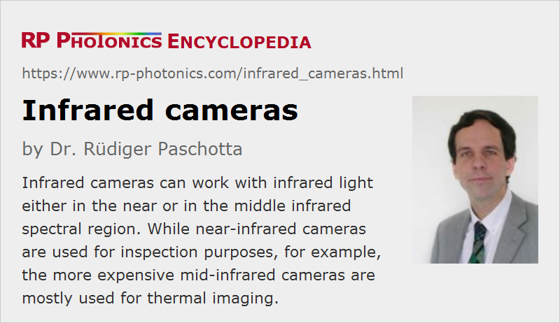

Infrared Cameras
Definition: cameras which work with infrared light
More general term: cameras
German: Infrarotkameras
Categories: photonic devices, light detection and characterization, vision, displays and imaging
How to cite the article; suggest additional literature
Author: Dr. Rüdiger Paschotta
Infrared cameras are cameras which are sensitive to infrared light. Cameras for different spectral regions are available, which differ substantially in terms of performance (e.g. resolution, responsivity and frame rate) and application areas. In the following sections, we distinguish near-infrared cameras and mid- or long-wave infrared cameras.
Most infrared cameras have a two-dimensional image sensor which delivers digital data through some electronic interface, for example of USB, Camera Link or LAN type. However, some special cameras have a line sensor, i.e., only a one-dimensional image sensor; those are often used for continuous imaging of moving items e.g. in production lines and in laser scanners.
Infrared cameras may or may not be sensitive to visible and ultraviolet light. Often, they include an optical filter which transmits only infrared light, so that sensitivity to unwanted wavelengths is avoided.
Typically, infrared cameras do not provide spectral information, but only intensity values for their pixels. This is in contrast to photo cameras, for example. When colorful images from infrared cameras are presented, these usually contain false colors, which only encode intensity values. However, there are also infrared cameras for multispectral imaging or hyperspectral imaging, which typically require a more sophisticated setup, e.g. with dispersive optics and a line scanner.
Near-infrared Cameras
The usual type of CCD and CMOS image sensors for visible light are based on silicon, and these have some sensitivity up to optical wavelengths somewhere between 1000 nm and 1100 nm. Although this is already in the infrared, a real infrared camera often contains a sensor chip based on a indium gallium arsenide (InGaAs), which provides a good responsivity roughly in the wavelength region from 900 nm to 1700 nm. Compared with silicon-based sensors, these are substantially more expensive and typically provide lower resolution – often only a few hundred pixels in the horizontal and vertical direction, i.e., well below one megapixel overall.
Due to the smaller band gap energy of InGaAs, optimum performance in terms of dark current and noise is achieved only at low temperatures; therefore, such as sensor chips are often equipped with a thermoelectric (Peltier) cooler. Unfortunately, that substantially increases the electricity consumption, and the housing often needs to be optimized in terms of heat dissipation, e.g. with cooling fins.
The required imaging optics do not substantially differ from those for visible cameras, since it is not difficult to find optical glasses with high transmission in that wavelength region. Essentially, one only requires adapted anti-reflection coatings and achromatic lenses.
Near-infrared cameras are often used for inspection purposes. For example, they are used for the inspection of semiconductor wafers, solar cells and various other industrial products, also for agricultural goods like wheat and fruit. Laser beam profilers are another example.
Near-infrared cameras can also provide night vision in conjunction with some infrared illumination. It can be beneficial for surveillance purposes to work only with invisible illumination light, although that might relatively easily be detected. As long as substantial exposure times are acceptable, such cameras can work with rather low infrared light levels.
For thermal imaging around or below room temperature, the near-infrared spectral range is not suitable; for that, one requires mid-infrared cameras (see below), which can register lower-energy photons.
Mid- and Long-wave Infrared Cameras
Mostly for thermal imaging (thermography) applications, mid-infrared cameras are used, which can respond to substantially longer optical wavelengths – sometimes well beyond 10 μm. It is then possible, for example, to obtain temperature maps of buildings in order to identify locations with excessive heat losses; that must work even at winter temperatures of below 0 °C, where thermal emission is rather low. There is a range of other applications, for example involving medical diagnosis, nondestructive testing, fire detection, satellite-based weather profile monitoring, air pollution monitoring and deforestation mapping, apart from military applications like passive infrared surveillance and heat-seeking missiles.
Spectral regions of special interest are the atmospheric windows at approximately 3 to 5 μm (the mid-wave infrared window, MWIR) and from 8 to 12 μm (long-wave window, LWIR). Here, atmospheric transmission is relatively high, while there is strong infrared absorption in other wavelength regions.
For such long wavelengths, special infrared optics are required. Unfortunately, that substantially contributes to the cost of long-wavelength infrared cameras. The imaging performance of such optics is also usually not great, but that may not matter since the resolution of the required image sensors is anyway quite moderate.
Cooled Infrared Photodetectors
Semiconductor photodetectors for such long wavelengths, corresponding to very low photon energies, have to have a very small bandgap energy. Suitable materials are for example mercury cadmium telluride (HgCdTe, MCT) (suitable even well beyond 10 μm) and indium antimonide (InSb, up to ≈5.5 μm). Similarly, there are focal plane arrays based on quantum well infrared photodetectors (QWIPs). The small bandgap energy also makes them very sensitive to thermal excitation within the sensor itself. Therefore, such infrared detectors often need to be strongly cooled during operation – often to 100 kelvins or even substantially below.
Cooling to the order of 100 K can be done relatively easily with a Stirling cooler, which is essentially a Stirling engine driven with an electric motor. It may take a couple of minutes after switching the device on until the required operation temperature is achieved. The cooled detector must be well insulated against the environment, also for preventing the deposition of ice, and is often placed in a vacuum-sealed case.
Their technology with infrared optics, a special long-wavelength image sensor and a cooling arrangement makes cooled infrared cameras quite expensive, but their performance is better than that of uncooled detectors as described in the following section. The substantial weight, electricity consumption and preparation time are of course practical disadvantages.
For more details, see the article on photoconductive detectors.
Thermal Detectors
Many long-wavelength infrared cameras do not contain a semiconductor detector based on the internal photo effect, but rather a kind of thermal detector, which responds to a temperature increase caused by absorption of incoming infrared light. Such thermal detectors can be based on different technologies:
- Frequently, one uses bolometers in the form of microbolometers, with which some number of pixels (e.g. 160 × 120, 320 × 240, 640 × 480 or 1024 × 768) can be realized on a sensor chip. As the sensing element, each pixel contains a thin infrared-absorbing plate, made e.g. of amorphous silicon (aSi) or vanadium oxide, which is suspended above the chip (with a small air gap between plate and chip) with two electrodes. One can then measure the temperature-dependent electrical resistance of the plate, which decreases with increasing temperature. Note that without incoming infrared light the temperature of the plate will relax towards the substrate temperature, while external radiation will increase the temperature. The readings will thus have to be corrected according to the substrate temperature, if that is not held constant. A metal mirror below the plate may be used to back-reflect non-absorbed infrared light and at the same time to reduce the thermal radiation from the substrate.
- There are pyroelectric materials such as lithium tantalate, generating a small electric voltage in response to a temperature gradient. That temperature gradient results from the heating by incident radiation; the generated heat is conducted to some substrate, and the temperature gradient is proportional to the incident intensity. Such detectors are AC-coupled, i.e., they can be used only to monitor changes, but not constant temperatures.
Such detectors may still be cooled to some extent in order to improve their noise performance, but fundamentally such cooling is not required. Often, they are temperature-stabilized, i.e., the operation temperature is kept constant, typically with a small Peltier cooler, but not at a particularly low temperature.
For more details, see the articles on thermal detectors and pyroelectric detectors.
Suppliers
The RP Photonics Buyer's Guide contains 20 suppliers for infrared cameras. Among them:
Questions and Comments from Users
Here you can submit questions and comments. As far as they get accepted by the author, they will appear above this paragraph together with the author’s answer. The author will decide on acceptance based on certain criteria. Essentially, the issue must be of sufficiently broad interest.
Please do not enter personal data here; we would otherwise delete it soon. (See also our privacy declaration.) If you wish to receive personal feedback or consultancy from the author, please contact him e.g. via e-mail.
By submitting the information, you give your consent to the potential publication of your inputs on our website according to our rules. (If you later retract your consent, we will delete those inputs.) As your inputs are first reviewed by the author, they may be published with some delay.
See also: cameras, image sensors, infrared detectors, infrared optics, thermal imaging
and other articles in the categories photonic devices, light detection and characterization, vision, displays and imaging
|  |
If you like this page, please share the link with your friends and colleagues, e.g. via social media: 


These sharing buttons are implemented in a privacy-friendly way! |
2020-05-27
You state a gross MISNOMER. There are NO infrared “cameras”. They are “imagers”. Camera implies that there is a chamber (camera in Italian). These imagers do not have a chamber but have a focal point array detector that converts the temperature signals electronically to a colorized map.
Answer from the author:
Usually, a camera is just considered to be an imaging instrument. The earliest camera – the camera obscura – indeed contained a chamber, which led to the origin of that term. Modern cameras usually use a lens instead of a pinhole, but otherwise also have kind of chamber. I am not sure whether one should prohibit the use of the term camera in case of any devices not containing such a chamber – or whether some authority has determined to do so. (It happens quite often that such details of the original instrument are not so seriously considered later on.)
Anyway, many infrared imaging devices do contain some kind of chamber (I mean empty space e.g. between a kind of lens and the detector), even though it might be much smaller than in the original camera obscura. At least for the mentioned near-infrared cameras, there is no doubt that the chamber required by you exists, and in other cases there may be some space at least between a filter or protection glass and the actual sensor.. Therefore, the statement “there are no infrared cameras” is definitely wrong.